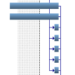

|
Code Optimization |
Recent Posts all posts
|
|
Closures |

|
How old am I? |

|
Bugs |
|
|
Make Python Objects JSON serializable |
|  |
Creating Gantt Charts |

|
LaTeX-Vorlage für ein Lastenheft |